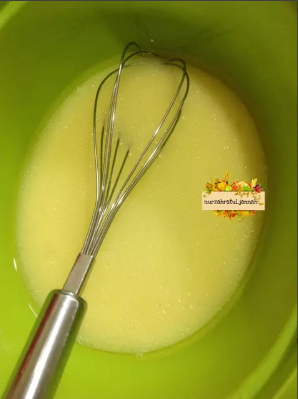
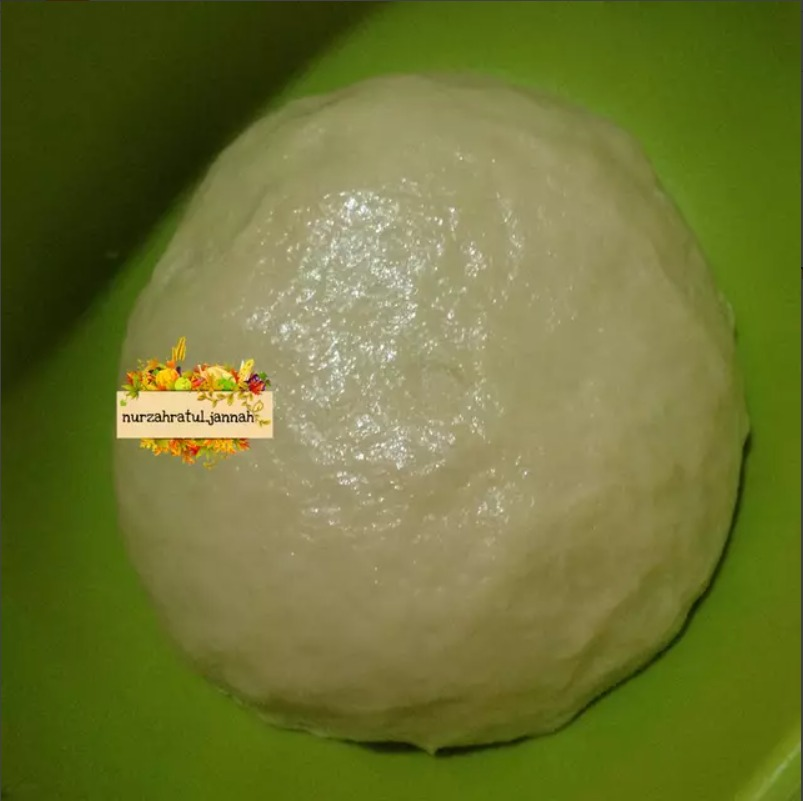
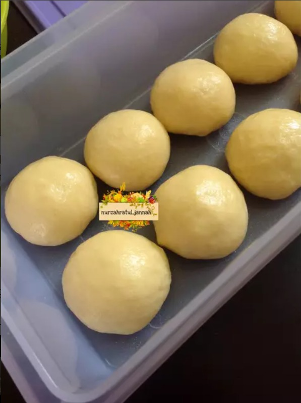
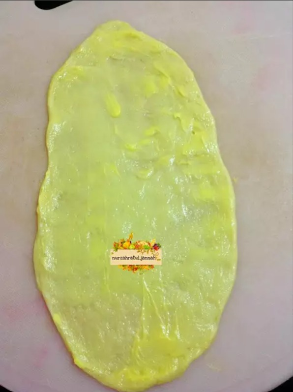
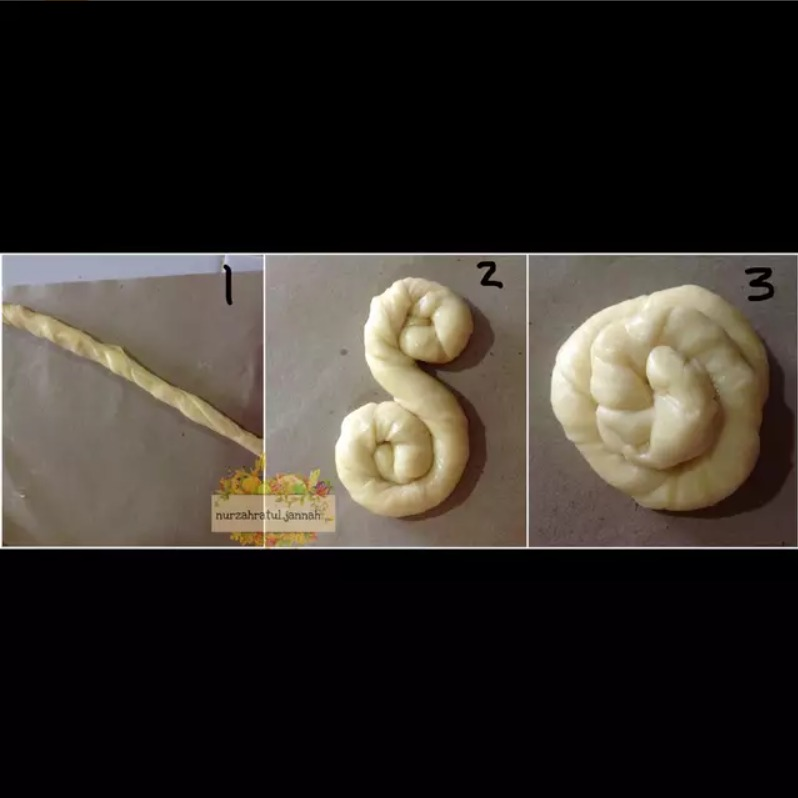
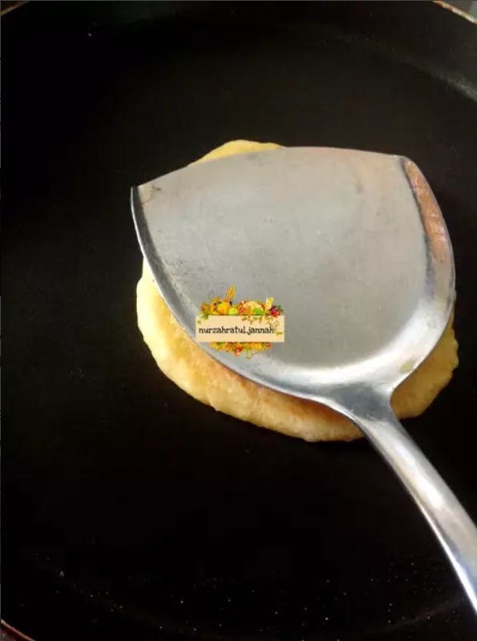
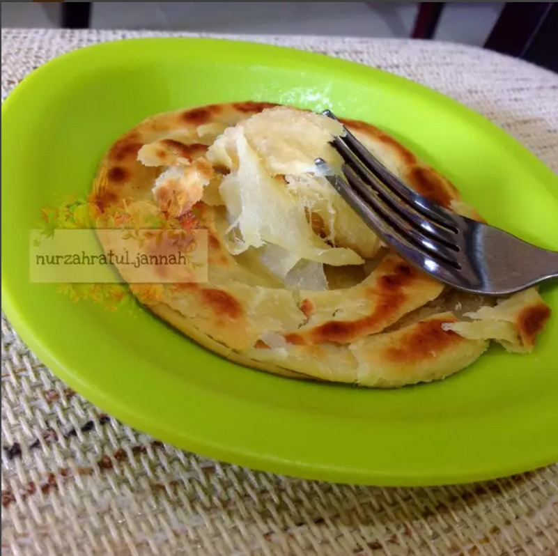

!DOCTYPE html>
Tugas Praktikum 2
Resep Kue Maryam

Bahan - bahan :
- 200 gram tepung terigu
- 80 ml air hangat
- 30 gram margarin
- 2 butir kuning telur
- 1/4 sendok teh garam
Langkah-langkah
- Siapkan wadah, lalu masukkan terigu, margarin, kuning telur, garam dan
air. aduk-aduk dan uleni sampai kalis.


- Setelah kalis, bagi adonan menjadi 5 bagian. Bentuk jadi bulatan menggu
nakan tangan, kemudian olesi dengan margarin bagian atasnya. Tutupi wadah dengan plastik dan
biarkan selama sekitar 1 jam.

- Setelah satu jam, ambil satu bulatan adonan. tipiskan di atas bidang datar.
Bisa menggunakan gilingan tangan atau cukup ditekan-tekan dengan jempol sampai tipis.
Setelah tipis olesi dengan margarin cair.

- Gulung memanjang, lalu gulung melingkar seperti konde, kemudian tipiskan
lagi seperti pada gambar di atas. Lakukan untuk semua adonan.

- Panaskan teflon dan panggang roti maryam menggunakan api kecil. Panggang
sambil di bolak-balik supaya nggak gosong. Begitu waranya menjadi
agak coklat kering dan terlihat matang, bisa langsung di angkat.

